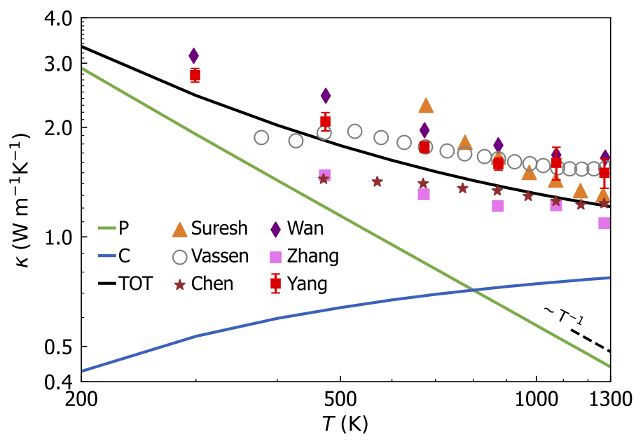

Solution of the Wigner transport equation#
This page explains how to compute the thermal conductivity from the solution of the Wigner transport equation (WTE) M. Simoncelli, N. Marzari, F. Mauri; Nat. Phys. 15, 809 (2019) (citation) and M. Simoncelli, N. Marzari, F. Mauri; Phys. Rev. X 12, 041011 (2022) (citation).
The Wigner formulation of thermal transport in solids encompasses the emergence and coexistence of the particle-like propagation of phonon wavepackets discusses by Peierls for crystals [Peierls, Quantum theory of solids (Oxford Classics Series, 2001)], and the wave-like interband conduction mechanisms discussed by Allen and Feldman for harmonic glasses [ Allen and Feldman, Phys. Rev. Lett. 62, 645 (1989)]. As discussed in the references above, the Wigner formulation allows to describe the thermal conductivity of ordered crystals (where it yields practically the same result of the LBTE), of disordered glasses (where it generalizes Allen-Feldman theory accounting for anharmonicity), as well as of materials with intermediate characteristics (in this intermediate regime, both particle-like and wave-like conduction mechanisms are relevant, thus the Wigner formulation has to be used to obtain accurately predict the thermal conductivity).
In practice, the solution of the Wigner transport equation yields the following expression for the thermal conductivity tensor (we use \(\alpha \beta\) to denote Cartesian directions) \(\kappa^{\alpha \beta}_{\rm T}=\kappa_P^{\alpha \beta}+\kappa_{\rm C}^{\alpha \beta}\), where \(\kappa_{\rm P}^{\alpha \beta}\) accounts for the particle-like propagation of phonon wavepackets and is exactly equivalent to the conductivity obtained solving the LBTE, while the other term \(\kappa_{\rm C}^{\alpha \beta}\) is the “coherences” conductivity and accounts for the wave-like tunneling of phonons between bands with an energy differences smaller than their linewidths. Specifically, the expression for \(\kappa_{\rm C}^{\alpha \beta}\) reads:
where \(k_{B}\) is the Boltzmann constant, \(\mathcal{V}\) is the volume of the primitive cell, \(N_{\rm c}\) is the number of phonon wavevectors \(\mathbf{q}\) used to sample the Brillouin zone, \(\hbar\omega(\mathbf{q})_s\) is the energy of the phonon with wavevector \(\mathbf{q}\) and mode \(s\), \({{V}^\alpha}(\mathbf{q})_{s,s'}\) is the velocity operator in direction \(\alpha\), \(\bar{{N}}^{T}({\mathbf{q}})_{s}\) is the Bose-Einstein distribution at temperature \(T\), and \(\Gamma(\mathbf{q})_{s}\) is the phonon linewidth (full width at half maximum, i.e. the inverse phonon lifetime \(\Gamma(\mathbf{q})_{s}=[\tau(\mathbf{q})_{s}]^{-1}\)).
As discussed in the references above, the term \(\kappa_{\rm P}^{\alpha \beta}\) can be evaluated exactly or in the RTA approximation (the former corresponds to account for all the repumping/depumping scattering events, while the latter only for depumping scattering events). In contrast, the term \(\kappa_{\rm C}^{\alpha \beta}\) depends only on the depumping scattering events, thus it remains unchanged if scattering is considered exactly or in the RTA approximation.
How to use#
Solution of the WTE, scattering in the RTA approximation#
To compute the Wigner conductivity with scattering in the RTA approximation, specify --br and --wigner. For example/Wigner_La2Zr2O7, the command is:
phono3py --nac --cell POSCAR --fc2 --dim="2 2 2" --dim-fc2="4 4 4" --mesh="19 19 19" --tmin=300 --tmax=1000 --tstep=700 --fc-symmetry --isotope --br --wigner --read-gamma > tc_La2Zr2O7.out
The example above uses the --read-gamma option to read the phonon linewidths stored in the file kappa-m191919.hdf5. The calculation of these linewidths is computationally expensive, more details are reported in the paper on the Wigner formulation, and in this example the linewidths are provided.
To learn how to compute the linewidths, the reader is referred to the documentation of the --write-gamma option.
The RTA populations (particle-like) conductivity \(\kappa_{\rm P}^{\alpha \beta}\), the coherences (wave-like) conductivity \(\kappa_{\rm C}^{\alpha \beta}\), and the total conductivity \(\kappa_{\rm T}^{\alpha \beta}=\kappa_{\rm P}^{\alpha \beta}+\kappa_{\rm C}^{\alpha \beta}\) are reported at the end of the output file tc_La2Zr2O7.out:
...
=================== End of collection of collisions ===================
----------- Thermal conductivity (W/m-k) with tetrahedron method -----------
# T(K) xx yy zz yz xz xy
K_P 300.0 1.914 1.914 1.914 0.000 0.000 0.000
K_P 1000.0 0.571 0.571 0.571 0.000 0.000 0.000
K_C 300.0 0.533 0.533 0.533 0.000 0.000 0.000
K_C 1000.0 0.743 0.743 0.743 0.000 0.000 0.000
K_T 300.0 2.447 2.447 2.447 0.000 0.000 0.000
K_T 1000.0 1.314 1.314 1.314 0.000 0.000 0.000
...
The calculation in this example shows that it is crucial to account for both the particle-like and wave-like contributions to accurately describe the ultra-low or glass-like conductivity of complex crystals such as La\(_2\)Zr\(_2\)O\(_7\). More details can be found in the paper on the Wigner formulation, which reports the following plot comparing predictions from the Wigner formulation and experiments over a broader temperature range:
{kind=link}
The experimental data are taken from Suresh et al., J. Nucl. Mater. 249, 259 (1997); Vassen et al., J. Am. Ceram. Soc. 83, 2023 (2000); Chen et al., J. Alloy Compd. 486, 391 (2009); Wan et al., Acta Mater. 58, 6166 (2010); Yang et al., J. Eur. Ceram. Soc. 36, 3809 (2016); Zhang et al., Ceramics International 46, 4737 (2020).
As a second example, we show how to compute the solution of the Wigner transport equation treating scattering in the RTA approximation for example/Si-PBEsol; the command is:
% phono3py-load --mesh 11 11 11 --ts 1600 --br --wigner
and the output is
...
=================== End of collection of collisions ===================
----------- Thermal conductivity (W/m-k) with tetrahedron method -----------
# T(K) xx yy zz yz xz xy
K_P 1600.0 20.059 20.059 20.059 0.000 0.000 0.000
K_C 1600.0 0.277 0.277 0.277 0.000 0.000 0.000
K_T 1600.0 20.335 20.335 20.335 0.000 0.000 0.000
...
Solution of the WTE, exact treatment of scattering#
To compute the Wigner conductivity treating scattering exactly, specify --lbte and --wigner. For example/Si-PBEsol, the command is:
% phono3py-load --mesh 11 11 11 --ts 1600 --lbte --wigner
and the output is
...
=================== End of collection of collisions ===================
- Averaging collision matrix elements by phonon degeneracy [0.035s]
- Making collision matrix symmetric (built-in) [0.000s]
----------- Thermal conductivity (W/m-k) with tetrahedron method -----------
Diagonalizing by lapacke dsyev... [0.148s]
Calculating pseudo-inv with cutoff=1.0e-08 (np.dot) [0.002s]
# T(K) xx yy zz yz xz xy
K_P_exact 1600.0 21.009 21.009 21.009 0.000 0.000 0.000
(K_P_RTA) 1600.0 20.059 20.059 20.059 0.000 0.000 0.000
K_C 1600.0 0.277 0.277 0.277 0.000 0.000 0.000
K_TOT=K_P_exact+K_C 1600.0 21.286 21.286 21.286 0.000 0.000 0.000
----------------------------------------------------------------------------
...
We note that usually in materials with ultralow or glass-like conductivity (\(\kappa_T\lesssim 2\frac{W}{m\cdot K}\)) treating scattering in the RTA approximation or exactly gives results that are practically equivalent (see paper on the Wigner formulation and references therein).
Computational cost#
Using the code with the --wigner option has a negligible effect on the duration of the calculation.